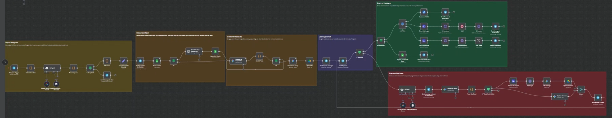
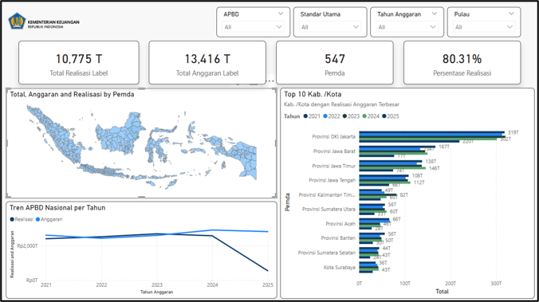
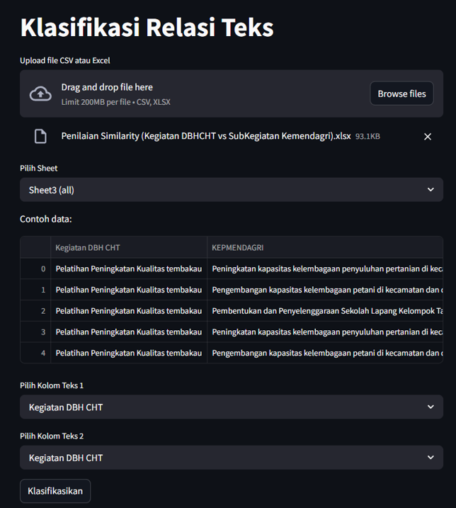
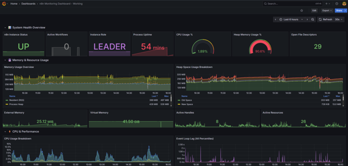
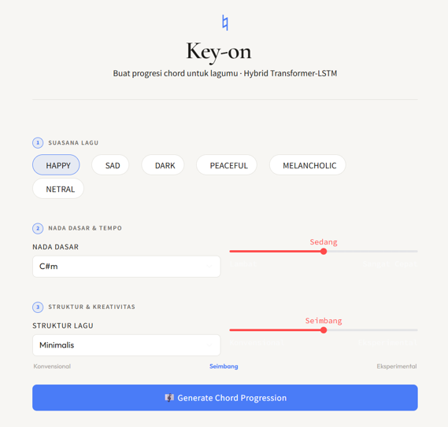

👋 Hi, I'm
Information System · Universitas Multimedia Nusantara · 2026
Upcoming graduate with proven expertise in transforming complex data into strategic insights by leveraging AI integration. I build intelligent workflow automation architectures, BI dashboards, and Machine Learning models that drive efficient decision-making.
I'm an Information System student at Universitas Multimedia Nusantara, graduating in 2026, with a strong focus on data analytics, AI integration, and intelligent automation. I believe technology creates the most value when it directly translates into smarter, faster decisions for organizations.
My experience spans across two meaningful internships — at Telkomsel where I built AI-powered ad automation systems, and at the Ministry of Finance where I developed NLP models and interactive Power BI dashboards for national fiscal data. I'm comfortable working across the full data pipeline: from raw data processing to ML deployment.
I'm actively seeking opportunities as a Data Analyst, AI Product Developer, or Business Intelligence Engineer where I can build scalable digital innovations that drive real impact.

Designed and developed an end-to-end AI automation pipeline using n8n that streamlines digital ad content creation and auto-publishes to Facebook, Instagram, and X. Integrated Telegram for trigger input, Gemini API for AI content generation, and Meta Graph API for cross-platform publishing. Also implemented real-time monitoring with Grafana and Prometheus, significantly reducing workflow downtime and improving system visibility.

Interactive Power BI dashboard featuring spatial maps of Indonesia for analyzing Regional Budget and Realization data (2021–2025). Accelerated fiscal trend analysis across all provinces with rich visual storytelling and dynamic filtering.

Built a Hybrid NLP-based text classification model using PyTorch and IndoBERT to automate validation of cross-ministerial data relationships. Deployed as an interactive Streamlit web app for immediate end-user access.

Implemented real-time monitoring and error handling for automation workflows using Grafana and Prometheus. Enhanced performance visibility, enabling proactive issue detection and reducing system downtime at Telkomsel.

Developed an AI-based chord progression recommendation system to help novice composers overcome early-stage creative barriers. Proposed a Hybrid Transformer-LSTM architecture integrating Roman Numeral Modeling and Soft Harmonic Reranking, trained on the Chordonomicon dataset (~666,000 musical compositions). The Roman Numeral approach reduced vocabulary from 4,314 absolute chords to 43 key-agnostic tokens for transpositional invariance. Achieved Top-1 Accuracy of 75.95%, Top-5 Accuracy of 97.76%, Perplexity of 2.69, and Harmonic Validity Balanced Score of 0.746. Deployed via Streamlit with MIDI export support.
Joined the AI product team to design and develop intelligent automation systems for digital advertising workflows, integrating multiple APIs and monitoring tools.
Contributed to national fiscal data analysis initiatives, developing automated data pipelines, interactive dashboards, and NLP-based classification models for cross-ministerial data.
I'm open to full-time roles, internships, freelance projects, or just a conversation about data, AI, and technology. Feel free to reach out!